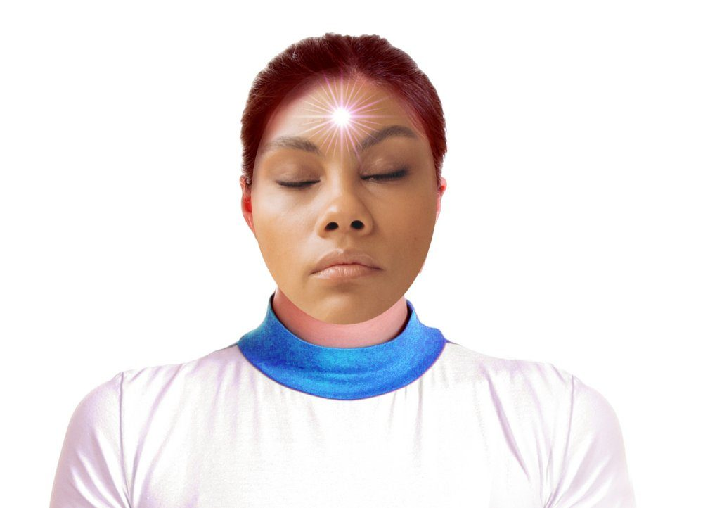

Tidur yang cukup
Tidur dan suasana hati saling memengaruhi dua arah. Kurang tidur membuat emosi lebih mudah meledak, dan kecemasan membuat tidur makin sulit. Jaga jam bangun yang sama setiap hari.
Kesehatan mental bukan sekadar tidak sedang stres. Halaman ini membedakan tekanan sehari-hari dengan kondisi yang perlu bantuan, menjelaskan cara merawat pikiran, dan menunjukkan ke mana harus mencari pertolongan.
WHO mendefinisikan kesehatan mental sebagai kondisi sejahtera yang memungkinkan seseorang menyadari kemampuannya, menghadapi tekanan hidup yang wajar, bekerja secara produktif, dan memberi kontribusi bagi lingkungannya.
Artinya, sehat mental bukan berarti selalu bahagia atau bebas masalah. Sehat mental berarti kamu masih punya ruang untuk merasa, berpikir, dan pulih setelah menghadapi hal yang sulit.
Data WHO memperkirakan hampir 1 dari 7 orang di dunia hidup dengan gangguan mental. Sebagian besar dari mereka tidak mendapat layanan yang memadai, dan itu sebabnya mencari bantuan sering terlambat.

Banyak orang menyebut semuanya "stres". Padahal tindakan yang dibutuhkan bisa berbeda, terutama untuk dua kondisi terakhir yang memerlukan bantuan tenaga profesional.
| Aspek | Stres biasa | Gangguan cemas | Depresi |
|---|---|---|---|
| Pemicu | Jelas, misalnya ujian, tenggat, konflik. | Bisa tanpa pemicu jelas, atau reaksi jauh lebih besar dari pemicunya. | Bisa tanpa pemicu; sering melibatkan faktor biologis dan lingkungan. |
| Durasi | Reda setelah situasinya selesai. | Berlangsung berminggu-minggu atau berbulan-bulan. | Minimal dua minggu terus-menerus, sering lebih lama. |
| Dampak harian | Mengganggu, tetapi aktivitas tetap berjalan. | Menghindari situasi tertentu, sulit berkonsentrasi, jantung berdebar. | Kehilangan minat, energi turun, sulit tidur, rasa tidak berharga. |
| Yang bisa dilakukan | Cukup istirahat, atur beban, bicara dengan orang terpercaya. | Konsultasi ke psikolog atau layanan kesehatan mental. | Konsultasi ke tenaga kesehatan; penanganan dini sangat membantu. |
Tabel ini bersifat edukatif, bukan alat diagnosis. Penegakan diagnosis hanya boleh dilakukan oleh tenaga kesehatan profesional.
Tidak ada satu cara yang berlaku untuk semua orang, tetapi beberapa hal berikut punya bukti cukup kuat untuk membantu.
Tidur dan suasana hati saling memengaruhi dua arah. Kurang tidur membuat emosi lebih mudah meledak, dan kecemasan membuat tidur makin sulit. Jaga jam bangun yang sama setiap hari.
Aktivitas fisik intensitas sedang terbukti membantu menurunkan gejala kecemasan dan memperbaiki suasana hati. Tidak perlu berat; jalan cepat sudah cukup.
Menceritakan beban pada satu orang yang dipercaya mengurangi rasa sendirian. Kalau beban terasa terlalu berat, bicara pada profesional bukan tanda lemah.
Tugas kuliah tidak pernah benar-benar selesai, jadi batasnya harus dibuat sendiri: jam berhenti, hari tanpa kerja, dan waktu benar-benar istirahat.
Hubungan yang hangat dengan keluarga, teman, atau komunitas adalah salah satu faktor pelindung terkuat. Sesederhana makan bersama atau mengobrol tanpa layar.
Media sosial dapat memperkuat perbandingan diri. Batasi waktu, matikan notifikasi yang tidak perlu, dan hindari membuka ponsel tepat sebelum tidur.
Tidak perlu menunggu sampai benar-benar tidak sanggup. Beberapa tanda berikut adalah alasan yang cukup untuk menghubungi tenaga kesehatan atau layanan konseling.
Jika ada pikiran untuk mengakhiri hidup, itu keadaan darurat. Segera hubungi layanan Sehat Jiwa Kemenkes di 119 ekstensi 8, atau minta seseorang menemani dan bantu menghubungi fasilitas kesehatan terdekat. Jangan menunggu sampai besok.
Layanan konseling psikologis awal yang disediakan Kementerian Kesehatan RI, dapat dihubungi melalui telepon 119 ekstensi 8 dan saluran digital terkait. Layanan ini gratis dan menangani juga kondisi darurat.
Puskesmas menyediakan layanan kesehatan jiwa dasar dan bisa merujuk ke layanan yang lebih khusus. Datang langsung, atau tanya lewat aplikasi SatuSehat Mobile.
Banyak kampus memiliki unit bimbingan konseling atau layanan psikologi bagi mahasiswa, umumnya gratis. Bisa diakses lewat bagian kemahasiswaan.
Psikolog membantu melalui terapi wicara, sedangkan psikiater dapat melakukan diagnosis dan meresepkan obat. Pilih sesuai kebutuhan dan rekomendasi layanan yang kamu hubungi lebih dulu.
Kadang langkah pertama yang paling berat adalah mengucapkan satu kalimat: "aku lagi tidak baik-baik saja, boleh cerita?" Itu sudah termasuk tindakan mencari pertolongan.
Dengarkan tanpa langsung menasihati, jangan meremehkan perasaannya, dan temani mencari bantuan profesional. Kamu tidak perlu menjadi psikolog untuk menjadi teman yang baik.